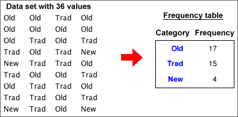

and
and If you don't want to print now,
Numerical and categorical data
In a data set, a numerical variable contains a number from each individual. A categorical variable classifies each individual into one of several groups.
Frequency tables
For a categorical variable, the frequencies for the distinct categories are the number of times each category occurs in the data set. The frequencies fully capture all information about the distribution of values and are usually presented in a frequency table.
Bar charts can be very simple and need not take up much space in reports. Avoid the temptation to embellish them 'artistically' to make them more visually appealing. These additions are collectively called chartjunk.
Chartjunk adds 'noise' to a bar chart and makes it harder to read the real information that is contains. Rather than adding chartjunk, draw it small or replace it with a frequency table.
A common form of chartjunk arises when each bar is drawn as a 3-dimensional object. When the resulting 3-dimensional picture is rotated, it often becomes harder to compare the heights of bars and to read off values from the axes. In particular, perspective views should be avoided.
and 
Spliting into groups
If the values of X are used to split the individuals into groups, the conditional distributions of Y given X are the distributions within each of these groups. They are found by dividing the cell counts by the totals for each such group. The columns of the table below show the conditional distributions for a contingency table, expressed as percentages.
| Variable X | |||||
|---|---|---|---|---|---|
| Variable Y | X1 | X2 | X3 | X4 | |
| Y1 | 000.5 | 000.8 | 017.8 | 018.2 | |
| Y2 | 012.1 | 044.6 | 050.9 | 051.5 | |
| Y3 | 036.3 | 032.8 | 019.1 | 018.2 | |
| Y4 | 051.2 | 021.8 | 012.2 | 012.1 | |
| Total | 100.0 | 100.0 | 100.0 | 100.0 | |
The conditional distributions of X given Y are similarly found by using Y to create the groups of individuals. They are found by dividing the cell counts by the totals in the other margin of the original contingency table.
| Variable X | ||||||
|---|---|---|---|---|---|---|
| Variable Y | X1 | X2 | X3 | X4 | Total | |
| Y1 | 02.9 | 04.4 | 83.8 | 8.8 | 100.0 | |
| Y2 | 12.9 | 42.3 | 40.5 | 4.2 | 100.0 | |
| Y3 | 44.8 | 35.9 | 17.5 | 1.7 | 100.0 | |
| Y4 | 63.6 | 24.0 | 11.3 | 1.2 | 100.0 | |
Both tables of conditional proportions (or percentages) are often informative.
Conditional distributions of X given Y and Y given X
The conditional proportions for X given Y can be quite different from the corresponding conditional proportions for Y given X and you must be careful to distinguish between them.
As an extreme example, under 5% of women are pregnant at any time, but 100% of pregnant people are women!
Conditional and marginal distributions
The distinction is between the marginal distribution for a variable and its conditional distributions is illustrated for the following contingency table that describes bruising of 96 apples in a packing plant.
| OK | Bruised | |
|---|---|---|
| Granny Smith | 40 | 8 |
| Fuji | 24 | 24 |
The diagram below shows the apples, arranged in rows by variety.

If the response, Y, is categorical and the explanatory variable, X, is numerical, we are again interested in comparing the response distribution at different x-values. We might use X to define 'groups' by splitting its values into classes (as might be done to draw a histogram) and this allows us to use stacked bar charts to describe the relationship.

It is not necessary for the 'classes' to be of equal width. For example, some of the age groups below are of width 3 months, whereas others are 6 months and the extreme classes are wider still.

Unfortunately this may result in predicted proportions greater than 1 or less than 0.

The parameters of the logistic curve
The parameter b1 is called the slope of the curve. Increasing it makes the curve steeper, and its sign determines whether the curve slopes upwards or downwards.

The parameter b0 is the curve's intercept and it determines the horizontal position of the curve. Increasing it shifts the curve to the left.

Estimating the logistic parameters
Estimating the parameters b0 and b1 of a logistic model is more difficult than estimating the parameters for a linear model by least squares, but many statistical programs will do the appropriate calculations for you.
We therefore take a 'black box' approach and simply show what parameter estimation gives without further justification.